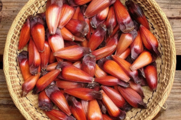

Arroz Carreteiro
- 3 copos de arroz
- 500 g de carne seca
- 200 g de bacon fatiado
- 200 g de linguiça calabresa
- 1 tomate grande bem maduro
- 1 cebola grande
- Pimenta calabresa a gosto
- Salsa a gosto
- Sal a gosto
- Cozinhe a carne seca em panela de pressão, retire, espere esfriar e desfie.
- Retire a pele da calabresa e corte em cubos juntamente com o bacon.
- Corte o tomate em cubos pequenos sem as sementes bem como a cebola.
- Refogue o bacon e a calabresa até ficarem bem dourados, acrescentando depois a cebola, tomate, pimenta calabresa e a carne desfiada.
- Após, acrescente o arroz, afogue bem, adicione a água corrigindo o sal se necessário e abaixe o fogo aguardando secar.
- Quando pronto, coloque a salsa em cima.

Pinhão cozido
- 1kg de pinhão na casca
- 2 colheres (sopa) de sal
- Comece lavando bem os pinhões em água corrente para remover qualquer sujeira ou resíduos.
- Use uma faca de serra para cortar a ponta mais fina do pinhão.
- Coloque os pinhões na panela de pressão e cubra com água. Adicione sal a gosto. Tampe a panela e leve ao fogo até que a pressão se forme. Cozinhe por cerca de 1 hora após a pressão começar.
- Após o tempo de cozimento, deixe a pressão sair naturalmente e espere até que os pinhões estejam mornos. Escorra a água.
Polenta
- 2 xícaras de fubá
- 1 litro de água
- 1 fio de azeite
- sal a gosto
- Adicione a quantidade de fubá que preferir em uma panela;
- Ao contrário do que muitos dizem, cubra a fubá com água fria e não quente;
- Adicione sal a gosto;
- Adicione um fio de azeite
- Dica: não pare de mexer a polenta até que a mesma fique cremosa e comece a desgrudar do fundo da panela. Sabemos que possivelmente você não terá uma engenhoca desta em casa, então, tente revezar com algum familiar! Sirva em uma travessa e acrescente salsinha para dar o toque final!